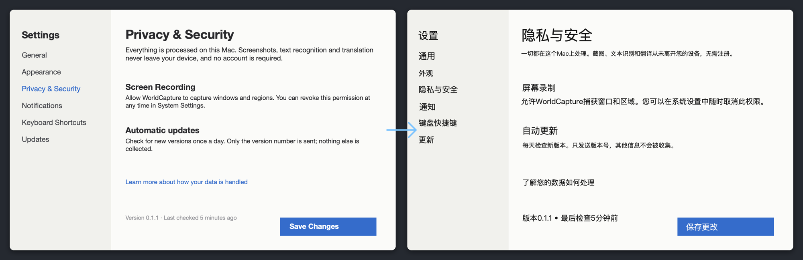
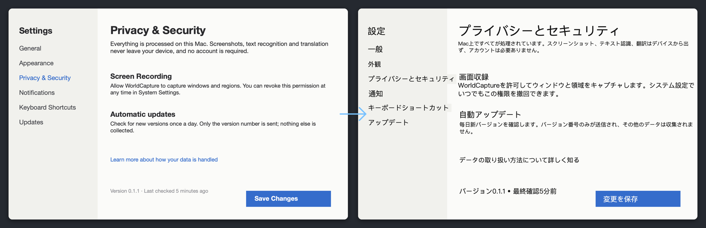

macOS 上的截图、录屏和图上翻译工具。译文直接贴回原位，全部在你的 Mac 上完成。
macOS 15 或更高 · Apple 芯片与 Intel 通用 · 已签名并公证 · 15 MB · 免费、MIT 开源

翻译前 → 翻译后。译文按原文的位置、字号和底色贴回，每一块都能再编辑。
全部本机 — 截图、录屏、文字识别、翻译都不离开这台 Mac。
无追踪 — 无账号、无埋点、无广告、无水印。唯一的联网行为是可选的更新检查。
开源可审计 — MIT 许可，源码公开，这些承诺你都能自己核实。
Screenshots, screen recording and in-place image translation for macOS. Translations land right over the original text, and everything stays on your Mac.
macOS 15 or later · Apple Silicon and Intel · Signed and notarized · 15 MB · Free, MIT
Before → after. Translations are placed at the original position, size and background, and every block stays editable.
Everything on your Mac — screenshots, recordings, text recognition and translation never leave the device.
No tracking — no account, no analytics, no ads, no watermark. The only network activity is the optional update check.
Open source, verifiable — MIT licensed; you can check every one of these claims yourself.
macOS 向けのスクリーンショット・画面収録・画像上翻訳ツール。訳文は元の文字の位置にそのまま重なり、処理はすべて Mac の中で完結します。
macOS 15 以降 · Apple シリコン / Intel 両対応 · 署名・公証済み · 15 MB · 無料・MIT

翻訳前 → 翻訳後。元の位置・サイズ・背景色のまま訳文を重ね、各ブロックは後から編集できます。
すべて Mac の中で — スクリーンショット、録画、文字認識、翻訳はデバイスから出ません。
追跡なし — アカウント、計測、広告、透かし、いずれもありません。通信は任意のアップデート確認だけです。
オープンソースで検証可能 — MIT ライセンス。これらの約束はすべて自分で確かめられます。